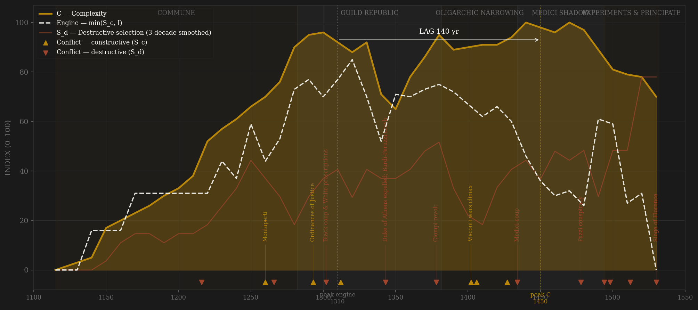
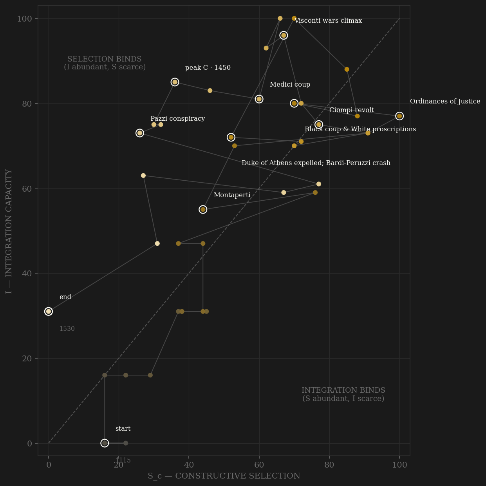

Florence is the measured-contestability prize of the sample. Most polities' elite-entry channel is coded from historians; Florence wrote hers down and Brown digitized her: 82,175 Tre Maggiori draws 1282-1532 plus 62,841 guild elections, pulled in full. The measured arc says what the chronicles say, with numbers: the Ordinances of Justice open the gate in 1293 — a quarter of elected officeholders that decade carry surnames never seen in the registers before, the gente nuova flood — and the share decays monotonically to under 2% by the Medici decades. The v2 engine peaks in the 1310s-20s on that open gate crossed with rising integration; complexity — Malanima's GDPpc, the dome rising, the workshop economy — peaks in the 1440s-50s: lag +140, PASS, at the window's edge. The combat-weighted v1 peaks instead on the Visconti wars (Baron's crisis, the discipline that forged the fiscal state) and passes at +40. In between sits the century the Tratte were built to hide: after 1434 the offices are still drawn by lot, but the accoppiatori fill the purses by hand. The borsellino — the 'special purse' — carries 25-35% of prior draws under the Albizzi and 51.8% by the 1480s. Formal contestability intact; real contestability captured. That divergence, measured decade by decade, is the subtlest rentier arc in the study — no statute ever closed the Florentine council the way the Serrata closed Venice's; the lottery simply stopped being one. The 1494 revolution reopens the gate (a Great Council of 3,500), Savonarola and Soderini run the last constitutional experiments, and then the closures come in hammer blows: 1512 behind Spanish pikes, 1530 after a ten-month siege, 1532 the priorate abolished and the Tratte series ends with the republic it had recorded for 250 years.

The trajectory climbs both axes through the commune's first two centuries and crosses the diagonal early: from the priorate onward Florence is integration-rich and lives in the selection-binds region — the exact opposite diagnosis from Tokugawa, the same as Song. The 1290s-1320s put the path at its upper-right extreme: gate open, florin ascendant, Villani counting looms. The 1340s catastrophe (Bardi-Peruzzi crash, the Duke of Athens, the Black Death halving the city) knocks integration sideways but the state reassembles — the Monte of 1345 is coordination rebuilt in the wreckage, a ρ·C_mem demonstration to set beside Southern Song. From 1382 the path slides down the selection axis in the study's slowest capture: Albizzi scrutiny-rigging, then Medici purse-packing, two generations of drift with integration held high — the coasting quadrant reached not by statute like Venice but by management. The 1494 spike is visible as the path's last leap up the S axis before the terminal drop: principate, siege, closure at the S-floor.
Coded by locus and target, never by outcome. Florence's ledger is the noisy middle of the triptych: more internal ruptures than Venice's near-silent register, an order of magnitude fewer than Genoa's. The pattern is generational purge cycles — 1248/1260/1266 Guelf-Ghibelline expulsions, 1302 (Dante's exile), 1378 Ciompi, 1434 Medici-Albizzi, 1494, 1512, 1527 — each a fight over who holds the machinery, almost never its destruction. Henry VII at the walls in 1312 and the Pazzi War armies in 1478-80 stay B (the levy machinery held both times, Hannibal rule); the Pazzi murder in the Duomo and Prato sacked as the 1512 coup's instrument are S_d despite the daggers and the Spanish pikes being pointed from outside the constitution. The 1529-30 siege is terminal S_d: the army at the walls existed to end the regime, and did.
| YEAR | CONFLICT | CODE | CODING RATIONALE |
|---|---|---|---|
| 1216 | Buondelmonte murder | Sd | The vendetta the chroniclers themselves date the Guelf-Ghibelline century from — one killing, aimed at the peace |
| 1260 | Montaperti | Sc | Field catastrophe vs Siena and the exiles — external battle = B; the purge that followed is the next row |
| 1266 | Guelf-Ghibelline expulsion cycle | Sd | 1248/1258/1260-66: each regime exiles the other wholesale; Dante's generation inherits the proscription state |
| 1293 | Ordinances of Justice | Sc | The anti-magnate opening: guild matriculation becomes the gate to office — measured new-surname share 24.5% that decade |
| 1302 | Black coup & White proscriptions | Sd | Charles of Valois opens the gates, ~600 exiled including Dante — the machinery weaponized against half the elite |
| 1312 | Henry VII besieges Florence | Sc | Imperial army repelled at the walls; levy machinery held throughout — Hannibal rule |
| 1343 | Duke of Athens expelled; Bardi-Peruzzi crash | Sd | Tyranny granted in fiscal panic, overthrown by city-wide rising; the crash and plague belong to E — the Monte (1345) is built in the wreckage |
| 1378 | Ciompi revolt | Sd | The wool workers seize the machinery itself — three new guilds, a woolcarder as gonfaloniere — broken in the Piazza within weeks; the showcase |
| 1402 | Visconti wars climax | Sc | Giangaleazzo's encirclement, Florence alone — the peer discipline that forged the fiscal state and civic humanism (Baron 1955) |
| 1406 | Conquest of Pisa | Sc | The port taken; dominion integration leap — subject-city war at the frontier |
| 1427 | The Catasto | Sc | Fiscal reform fought through the councils and won — 60k+ households enumerated; within-rules contest at its best (10,004 city households in our pull) |
| 1434 | Medici coup | Sd | Cosimo returns from exile, Albizzi exiled wholesale; accoppiatori now hand-fill the purses — offices still drawn, outcomes managed |
| 1478 | Pazzi conspiracy | Sd | Giuliano murdered at Mass, the archbishop hanged from the palazzo window, ~80 executed; the war that followed stays B — this row is the machinery attack |
| 1494 | Revolution & Great Council | Sd | Medici expelled, the widest franchise in the polity's history created — regime overthrow coded by locus; the reopening it delivered is in channel A |
| 1498 | Savonarola executed | Sd | The constitutional experiment consumes its prophet — hanged and burned in the Piazza after the appeal law failed its only test |
| 1512 | Sack of Prato & Medici restoration | Sd | The Spanish army's sack is the coup's instrument — Great Council abolished; external hands, internal target |
| 1530 | Siege of Florence | Sd | Ten months, famine, Ferrucci destroyed at Gavinana; capitulation, purges, and in 1532 the priorate itself abolished — terminal |
| COMPONENT | GRADE | BASIS |
|---|---|---|
| S_c A — Elite entry | ● corpus-measured (0.5) + ○ coded | Online Tratte pulled IN FULL 2026-07-06: 82,175 Tre Maggiori draws 1282-1532 + 62,841 guild elections (Litchfield/Brown CDS sqlform endpoint). Measured: new-surname share among named elected (24.5% 1290s → <2% Medici decades); borsellino share of prior draws (25-35% Albizzi → 51.8% 1480s = the capture measured). Coded strand carries the 1494 formal reopening the surname proxy can't see |
| S_c B — Peer rivalry (0.30 cap) | ○ scholar-coded | Siena/Arezzo/Pisa contests, Henry VII 1312, Castruccio, Visconti wars 1390-1402 (Baron thesis cited), Ladislaus, Lucca, Milan 1440s, Pazzi War, Pisa reconquest 1494-1509 |
| S_c C — Internal within-rules | ○ scholar-coded | Priorate scrutinies, the catasto debate 1427, pratiche records, Savonarola-era constitutional experiments, Soderini's gonfaloniere a vita |
| S_d — Destructive | ○ coded (events documented) | Expulsion cycles 1248-1302, Duke of Athens, Ciompi 1378, 1434/1458/1466 machinery-bending, Pazzi 1478, 1494/1512/1527 revolutions, 1530 siege — locus-and-target throughout |
| I — Integration | ◐ proxy + coded | Florin mint output 1252-1500 (de Cecco/Spufford, 0.35, sparse — flagged); coded: florin reserve-currency arc, Monte comune 1345, THE CATASTO 1427 as fiscal integration, Medici bank 10-branch network peak ~1455 (de Roover ◐), dominion integration post-1406 |
| C — Complexity | ◐ measured + coded | Malanima/Alfani GDPpc 1300-1530; city population (Villani ~120k 1338, Catasto 37k 1427 = measured census); coded cultural-industrial ordinal (Villani's 70-80k cloths 1330s, Brunelleschi's dome 1420-36, workshop system, banking scale) |
| E — Entropy | ◐ market-measured (0.5) + coded | Monte comune price of par 1345-1500 (Molho/Epstein/Pezzolo — stress = 100−par: 62% 1340s crash-era, arrears-era discounts late 15th c); coded: Bardi/Peruzzi failure wave 1343-46 (◐ Hunt 1994), Black Death 1348 (city halved), plague waves, Monte/dowry-fund arrears |
43 decade rows 1115-1530 built by scripts/build_florence_sicre.py from the full Online Tratte and Online Catasto pulls (2026-07-06, Brown CDS sqlform endpoints — raw HTML + parser in data/raw/florence/pulls/) plus Monte par / mint / GDPpc series from historic_master_v015; audit in components_audit.csv, per-decade channel ledger with measured columns in coding_ledger_v2.csv. Straight-to-v2 build: Sc_v1_combat = channel B alone (external-war-only). Frozen-protocol lags: v2 engine 1310s (open-gate decades × rising I) → C 1450 = +140 PASS; v1 engine 1410 (Visconti/Ladislaus war era) → C 1450 = +40 PASS — both definitions pass, the engine dates differing by a century is the definitions disagreeing about what selection IS: contest peaked with the Ordinances, combat with the Visconti. Unsmoothed v2 +120 PASS (robust). Channel A is hybrid 0.5 measured (Tratte log new-surname share, z-spliced, 1280s burn-in excluded) + 0.5 coded; the borsellino series (formal-vs-real divergence) informs the coded strand and sits in the ledger. THE TRIPTYCH: Venice, Florence, Genoa — three city-states, same sea, three institutional designs: Venice closed entry by statute (1297) and bought near-zero S_d; Florence kept the forms open and let capture hollow them (offices drawn, purses packed); Genoa kept entry violently open and paid in ~40 governments per century. Comparative chapter material — no pooled statistics computed here (preregs sealed). Rebuild: build_florence_sicre.py, then polity_report.py --slug florence